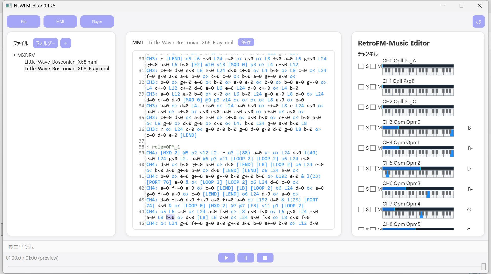

はじめに——音を、正面から作る
前回の最後に、私はこう書いた。 「次回は、二つ目のZ80 CPUで、FM音源ドライバが鳴り始める話を——お届けしたい」と。
だが、計画を詰めていく中で、優先順位を入れ替える判断をした。
Z80への実装より先に、まずWindows上で作曲環境を作り、 実際にその環境で作曲・編曲作業を進めながら、 MMLの書式を決めよう。
理由は単純だが、過去の教訓もある。
Z80アセンブラで書いたドライバは、一度組み上げてしまうと書式の変更が非常に高くつく。
メモリも速度も限られた環境で、
「やっぱりこの表記が要る」「この命令は不要だった」を後から反映するのは、
ほとんど作り直しに等しくなる恐れがある。そのための検証作業にも時間がかかる。
書式が固まっていない段階でZ80へ降ろすべきではない。
そう思いなおし、実際にMMLを記述しながら、より使いやすいものに仕上げることを優先することにした。
というわけで、この期間の作業は二つになった。
VNStudioに載せるFM音源ドライバそのものの刷新——
OPNAとOPLL、そしてADPCM。複数のFM音源チップとPCMを同時に鳴らせるようにする。
そして、その音づくりのための専用のMMLエディタ／プレイヤーを、
新しく一本立ち上げたことである。
今回は、この二つのトピック——音源の話だけで一本お届けする。
第1章：OPNAとOPLL——「どちらか」ではなく「すべて同時再生へ」へ
Vol.9で語った
「失われたゲーム音楽文化のサルベージ」。
その具体的な手法として、
OPNA（YM2608）とOPLL（YM2413）の
エミュレーションコアを搭載することとしていた。
前者はPC-8801mkIIFAなどのサウンドボードIIの系譜、後者はMSX2のFMPACの系譜である。
今回、更に、X68000の系統であるOPM（YM2151）とADPCM（MSM6258）も搭載することとし、
同時再生を可能とした。
OPMとOPNAのあの特別な高音の響きのメロディーとPCMとの躍動感あるリズムのハーモニー。
OPLLの愛らしく太い音色。それらの「楽器」を同時に演奏できるのだ。
なお、FM音源ドライバの構成は、従来のレトロゲームなどの音源ドライバを複数分析することで知見を高め、
このドライバでは、ソフトウェアエンベロープやポルタメントなどの音のエフェクトのロジックを、音階発声（ノートオン・オフ）の上位で動かすことにより、
まるで、「FM音源がシンセサイザーになったかのようなサウンドを奏でる」ことを目指した。
第2章：オリジナルFM音源プレイヤー——「RetroFM-Music Editor」
MMLをWindowsのテキストエディタなどで書いて、コマンドで再生して、また書き直す—— それでも作れないことはない。だが、 VNStudioの「まるでiPadで絵を描くように」という、基本思想を、ここでも実現しようと考えた。
そこで、FM音源ドライバ専用のMMLエディタを新規で開発することにした。
名前はRetroFM-Music Editor。
VNStudioと同様、WPF上で動作する、Windows向けの単体アプリケーションである。

画面は3ペイン構成だ。
左にファイルツリー、中央にMMLエディタ、右にプレイヤーとチャンネルモニタ。
それぞれ独立して表示・非表示を切り替えられ、
隠したペインの領域は残りのペインが完全に埋める。
この組み合わせも、ペイン幅も、次回起動時に復元される。
主な機能を挙げておく。
- MMLシンタックスハイライト——制御コマンド・ディレクティブ・チャンネル宣言は青、音符と休符は濃色、コメントは緑がかった灰色
- 再生中コマンドのハイライト——いま鳴っている音が、MMLのどの文字から来ているかを原文位置で追跡して光らせる
- チャンネルモニタ——チップのプリミックス出力から求めた実測RMS（-60〜0 dB）のレベル／ピーク表示、ミニ鍵盤、リズム楽器（BD/SD/HH/CY/TM/RI）の個別発音表示
- Mute / 複数選択Solo——同一チップの内部リズム3chは
RHYという1本のストリップへ統合 - シーク——無音レンダリングで音源の内部状態を再構築してから移動する。前方シークは差分だけを進め、後方シークは先頭から作り直す
- ライブ編集ホットスワップ——MMLを書き換えると、再生位置を保ったまま演奏内容が差し替わる
- CLI——48kHzステレオのWAVを書き出し、ピーク値・tick数・PCMのSHA-256を報告する
実際に演奏している様子を、動画で置いておく。
※この動画には音声が含まれます。再生の前に音量にご注意ください。
なお、UIの配色・フォント・角丸ボタン・スリムなスクロールバーは、
VNStudioのエディタと意図的に揃えてある。
同じ工房から出た道具に見えること——それも基本だが大切な概念だ。
音を作る道具を、音を鳴らす仕組みと同じ手で作る。
理想を実現するためには、一見遠回りに見えても、これがいちばん速いはずだ。
第3章：そして、次のステージへ——
ここまではすべて、Windows側の実装の話である。
このVNStudio上で作った作品は、
fmplay bgmの1行でこのFM音源セットを鳴らせる状態となり、Windows版は、ほぼ完成形が見えてきた。
そして次の挑戦は、VNStudioのX68000、FMTowns、PC9821などへのレトロコンピュータへの移植と、 XZ80へのFM音源ドライバの実装だ。
ここまで育てたVNStudioゲームエンジンと、ドライバの設計を
Z80やMC68000のアセンブラで書き直して、実際のマシンで動かすことだ。
C#で作った実装が正しく動いているぶん、
「何を作ればいいか」の作業の輪郭は、もう見えてきている。
「当時憧れた『夢のパソコン』で、実際に動くゲームを『自分』でつくる」
これを、このプロジェクトの本懐としたい。